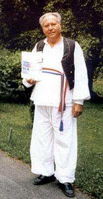

pučki pjesnik · folk poet · Sopje 1933. – Valpovo 2015.
Hrvatski · izvornikEnglish · translation
Dobro došli
Welcome

Ivan Benak u šokačkoj narodnoj nošnji Ivan Benak in Šokac folk costume
Ivan Benak (Sopje, 29. srpnja 1933. – Valpovo, 11. svibnja 2015.) bio je pučki pjesnik iz Slavonije. Trideset i šest godina vozio je hitnu pomoć u Valpovu, a cijeli je život pisao pjesme: ljubavne i domoljubne, šaljive i protestne, a najviše i najljepše za djecu.
Ivan Benak (Sopje, July 29, 1933 – Valpovo, May 11, 2015) was a folk poet from Slavonia, in eastern Croatia. For thirty-six years he drove an ambulance in the town of Valpovo, and all his life he wrote poems: love poems and poems of homeland, funny poems and protest poems, and, most of all and best of all, poems for children.
Objavio je šest samostalnih zbirki, pjesme su mu uglazbljene i pjevane na festivalima, a stotine puta čitao ih je na sijelima, u vrtićima, školama i domovima za starije diljem Slavonije. Ove stranice čuvaju sve njegove pjesme koje je obitelj sačuvala, na hrvatskom izvorniku i u engleskom prijevodu, da ih mogu čitati i njegovi unuci i praunuci, gdje god u svijetu bili.
He published six collections of his own. Several of his poems became songs performed at festivals, and he read his verses hundreds of times at village poetry evenings, in kindergartens, schools and old people's homes all over Slavonia. These pages keep every poem his family has preserved, in the Croatian original with an English translation beside it, so that his grandchildren and great-grandchildren can read them wherever in the world they live.
„Ivan Benak mi je ime, / pjesnik koji piše rime.“
“Ivan Benak — that is me, / poet writing rhymes, you see.”
Misao dana · Thought of the day
Jesenje kiše tjeraju ljeto, lišće polako žuti. Po cesti vjetar prašinu diže i huči – valjda se ljuti.
The autumn rains are driving summer out, the leaves are slowly turning yellow. Along the road the wind whips up the dust and howls: perhaps he's cross, the fellow.